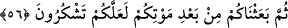

56. Sonra ölümünüzün ardından sizi dirilttik ki şükredesiniz.
Diriltme ölümden sonra olan bir hâdisedir. Buna rağmen diriltmenin “ölümünüzden
sonra” kaydı ile beraber zikredilmesinden amaç, dirilmenin bazen uyku veya bayılma
olabileceğine işâret olabilir.
Katâde der ki: “Onlar ecelleriyle ölmemişlerdir. Onların ölümü, ecelleri
tamamlanmadan önceki sekte gibidir. Bu yüzden ecellerini tamamlamaları, takdîr olunan
rızıklarından faydalanmaları için tekrar diriltilmişlerdir. Eğer ecelleriyle ölselerdi,
kıyâmete kadar diriltilmezlerdi.”
Akla şöyle bir soru gelebilir: “Bunlar öldüklerine göre nasıl yeniden mükellef
olurlar? Eğer öyleyse âhıret ehlinin de bunlar gibi, diriltildiklerinde yeniden mükellef
olmaları gerekmez mi?”
Cevâben deriz ki: Böyle bir ölümden sonra dirilmek insandan teklifi kaldırmaz.
Teklifi kaldıran; kıyâmet gününün gerçekliğini, cennet ve cehennemin varlığını, buradaki
nimetleri ve azâbı yakînen görerek kesin bilgi elde etmektir. Durum böyle olunca
“sâika” ile öldürülen İsrâîloğulları, âhıret hakkında bilgi sâhibi olmamışlardır. Onların
diriltilmesi uykudan uyanmak, baygınken ayılmak mesâbesindedir. Bu yüzden onların
tekrar şerîat emirleriyle mükellef tutulmaları câizdir.
Umulur ki verdiğimiz bu nimetlere şükredersiniz. Bu nimetler şirksiz ve itâatli bir
hayattır. Veya “sâika” ile gücünü görmeniz sebebiyle daha önce “alenen görmeden
îmân etmeyiz” dediğiniz Allah’a inanmanızdır. Bir nimeti, daha fazlasını istemek için
terketmek, o nimete nankörlüktür. Bu yüzden umulur ki siz îmân nimetine şükredip bu
mûcizeden sonra başka bir günaha dönmezsiniz.
Kıssanın aslı şudur: Mûsâ (a.s.) Tûr’dan dönüp de kavminin buzağıya taptığını
görünce kardeşine ve Samirî’ye söyleyeceğini söyledi. Buzağıyı yakıp denize attı.
Kavmi de pişman olup: “Eğer Rabbimiz bize merhamet etmez ve bizi bağışlamazsan
muhakkak biz hüsrâna uğrayanlardan oluruz” dedi. Bunun üzerine Allah Teâlâ,
Mûsâ’ya bir grup insanla bağışlanma ve özür dilemek için kendisine gelmelerini
emretti. Mûsâ kavminin hayırlılarından yetmiş kişi seçti. Tûr’a gelince onlar: “Ey
Mûsâ, Rabbimize yalvar da kelâmını işitelim” dediler. Mûsâ, Rabbine bu hususta
yalvardı ve isteği kabûl olundu. Mûsâ, dağa yaklaştığında dağın buluttan direklerle
tamamen kaplanmış olduğunu gördü. Mûsâ bulutun içine girdi, kavmine de girmelerini
söyledi. Rabbi Mûsâ ile konuştu, ona bâzı emirler ve nehiyler verdi. Mûsâ’nın
söylediği her kelimede Rabbi onun üzerine yayılan bir nûr attı. Yetmiş kimseden hiçbiri
bu nûra bakmaya güç yetiremedi. Ancak Rabbinin Mûsâ’ya: “Şunu yap, bunu yapma!”
gibi sözlerini işittiler. Bu esnâda onlar, Allah’ı görmeye tamâ’ gösterdiler ve
diyeceklerini deyince hepsi yıldırıma çarpılıp bir gün bir gece boyunca ölü olarak